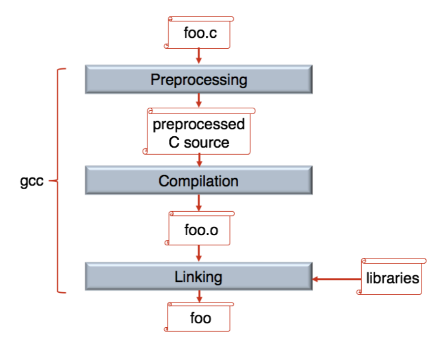
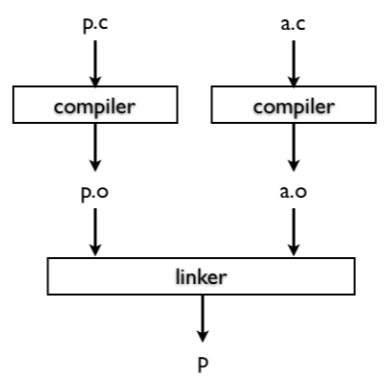
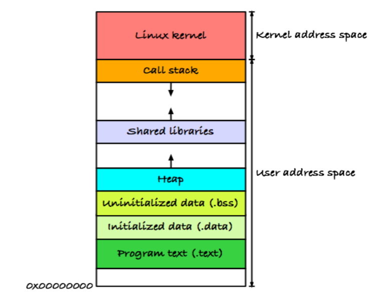
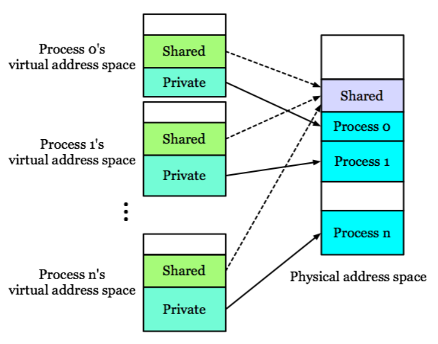
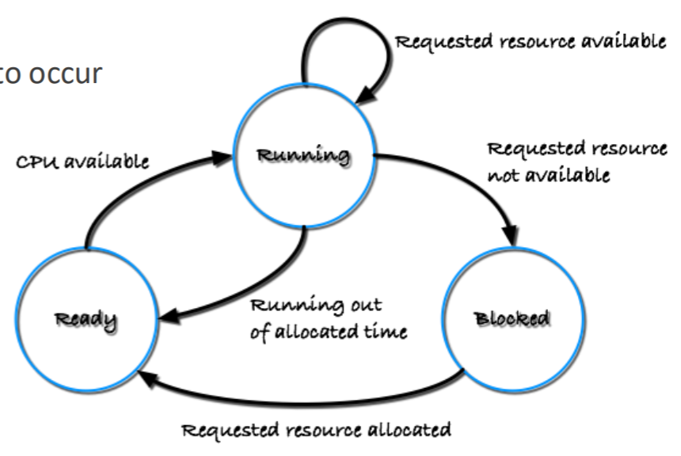
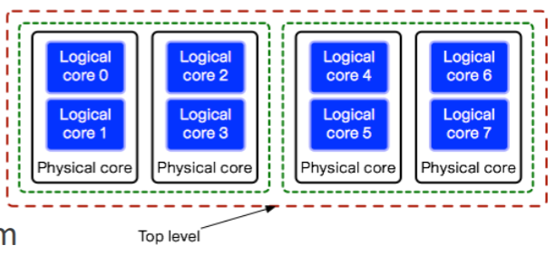

서울대학교 컴퓨터공학과 이재진 교수님의 "확장형 고성능 컴퓨팅" 강의를 필기한 내용입니다.
Programming Language Basics
- 맨날 얘기하는거지만 CS 에서는 abstraction 이 중허고 이것으로 내부 작동 과정을 알지 못해도 해당 기능을 사용할 수 있게 해준다.
- 이때 PL 은 프로그램 작성을 위한 high-level abstraction 을 제공한다.
- “Programming” 은 machine 에 어떤 작업을 하도록 명령을 내리는 것으로 정의할 수 있다.
- 뻔한 얘기지만 PL 은 자연어에 가까워서 programming 을 더 빠르게 할 수 있도록 해준다고 한다.
- Low-level (assembly): Instruction 에 naming 을 해놓은 것 (1:1 관계)
- 옛날에는 어떤 언어를 만들 때, 처음에는 compiler 를 asm 으로 개발하고 그 이후에는 compiler 도 그 언어로 개발되는 순서로 했었다고 한다.
- Syntax 와 sementics 의 차이는
- Syntax: 문법
- Semantics: 의미
- Interpreter
- Compile 과 execution 을 동시에 하는 것인데
- 조금 더 구체적으로 말하면 program 을 input 으로 받아 해당 program 의 output 을 output 으로 내뱉는 놈을 의미한다.
- 모든 연산이 함수로 구현되어 있어서 code parsing 후 해당 함수를 call 하는 것으로 실행된다.
- 따라서 매번 func call procedure 를 타기 때문에 compiler 보다 느린 것.
- Function
- 수학적 함수와는 다르게 PL 에서의 함수는 machine state (가령 memory 에 저장된 값) 을 바꾸기 때문에 매 실행시마다 결과가 다를 수 있다.
- 따라서 수학 함수는 값으로서 생각할 수 있지만 C 에서는 안된다.
- C 언어의 함수는 Second-class citizen 이기 때문.
C Compilation Step
- C compile 과정:

- C compile 과정: Source code (
.c) -> Preprocessing -> Compilation -> Object file (.o) -> Linking (w/ lib) -> Executable binary - Preprocessing
#include는 header file 을 가져오기 때문에 선언만 가져온다.- 그래서 link 를 통해 implementation 을 연결해주는 작업이 필요한 것.

- Linker
- 만약 link 하지 않고 그냥 implentation 이 preprocess 에서 다 포함이 된다면 매번 얘네들을 compile 해줘야 한다.
- 근데 linker 을 사용하면 부분적으로 compile 하고 (
.o) 변경되지 않은 부분들에 대해서는 compile 하지 않게 해주는 덕분에 전부 compile 하는것보다 훨씬 빠르게 수행될 수 있다.
Process Execution
- Process 의 execution lifecycle 을 큰그림으로 그려보자.
- Program 을 실행하면 이걸 메모리에 올려두고, ready queue 에 넣어놓은 뒤에
- Context switch 되면 kernel 에서 정해진 사전 작업을 처리하고
- 이 메모리에 올려둔 코드로 jump 해서 제어권 변경 및 실행되기 시작하는 것.
- 그리고 종료되면 kernel 이 다시 제어권을 받아 후처리하게 된다.
- 그리고 각 instruction 을 실행하는 것은
- Controller Unit 은 PC 를 보고 해당 instrunction 를 메모리에서 가져오고 (fetch),
- PC 를 바꾸는것도 이 Controller unit 이 담당한다.
- Decoder 가 이놈이 뭔지 파악 (decode) 해서 해당 inst 에 대한 ALU (Arithmetic Logic Unit) 으로 보내 처리 (execute) 하며,
- 이런 instruction cycle 을 반복하게 된다.
- Controller Unit 은 PC 를 보고 해당 instrunction 를 메모리에서 가져오고 (fetch),
- Kernel 로 제어권이 넘어간다는 것은 kernel code 로 PC 를 바꾸는 것을 의미한다.
- 이렇게 제어권을 넘기는 것을 control transfer 라고 한다.
BRANCH, function call (JUMP) 모두 마찬가지로 Control unit 이 PC 를 바꾸는 것STORE(+LOAD), Arithmetic operation,BRANCH만 있으면 이론적으로는 어떤 프로그램이든 구현할 수 있다.- 저 상태에서 필요에 의해 optimization 이 들어간게 현대의 CPU 임.
- Register: processor 가 직접 접근해서 값을 가져올 수 있는 아주 빠른 저장소
- Architecture 가 32, 64 bit 라는 것은 register 의 사이즈가 해당 크기라는 것이다.
- 그래서 메모리에서 한번에 가져오는 bit 의 크기도 그 정도이고,
- Instruction 의 최대 크기도 여기에 맞게 되어 있다.
- Architecture 가 32, 64 bit 라는 것은 register 의 사이즈가 해당 크기라는 것이다.
- Variable: named memory location
- 이 주소는 compile time 에 다 정해진다.
- 당연히 Virtual address 이기 떄문에 이것이 가능한 것
- 실행시에 virtual address 로 접근하면 page fault 가 나며 physical address 를 받아 page table 등록되고 처리되는 형태
- 이 주소는 compile time 에 다 정해진다.
CISC, RISC
- CISC: Complex Instruction Set Computer
- Backward-compatibility 를 위해서 이전의 ISA 도 다 들고 있음
- 따라서 매우 뚱뚱맨
- 참고로 CISC 라는 용어는 RISC 가 나오기 전까지는 없었다고 한다; CISC 는 RISC 가 아닌 모든 architecture 를 다 커버함.
- RISC: Reduced Instruction Set Computer
- CISC 에서는 메모리 주소 표현법이 아주 많고 따라서 compiler 입장에서는 선택지가 많기 때문에 optimize 하기 힘들다.
- 그래서 RISC 는 표현법이 적고
LOAD,STORE를 무조건 사용해야 하는 등의 차이점이 있다.- CISC 에서는
LOAD,STORE뿐 아니라 메모리 주소가 instruction 에 바로 들어갈 수도 있는데 RISC 는 무조건 LOAD 로 register 로 올려야지 사용할 수 있다.
- CISC 에서는
- RISC 가 문법이 간단하기 떄문에 compiler 입장에서 어떻게 해야 code optimize 를 할 수 있을지 예측이 가능하다.
- 가령 RISC 의 경우에는 모든 instruction 의 크기가 동일하다. CISC 에서는 들쭉날쭉함
- 그리고 RISC 에서는 모든 instruction 이 (pipeline 의 도움을 받아) 1 cycle 에 끝난다.
- 다만 RISC 에서는 이런 간단한 문법때문에 오히려 code size 가 커지기도 한다.
- 요즘은 겉으로는 CISC 지만 내부적으로는 RISC 로 되어 있다고 한다.
- 외부에 노출되는 API 만 CISC 형태를 띄고 실제 구현된 것은 RISC 와 비슷하게 구현되어 있다고 한다.
- 사실 이건 뭔말인지 잘 모르겠음
Process
- 이놈 구성 요소
- (1) register 도 들어간다.
- 당연히 time sharing 할 떄 사용하고 있던 register 들을 PCB 에 넣어놔야지 다시 복구가 가능하니까
- (2) memory (3) IO status (fd 등) (4) signal mgmt
- (1) register 도 들어간다.
- Run mode
- Instruction 도 mode 가 나눠져 있다
- Kernel mode 와 user mode
- 당연히 kernel mode inst 는 kernel 만 실행할 수 있고,
- User mode 의 code 가 kernel instruction 을 실행하기 위해서는 이걸 해달라고 kernel 에 부탁하는 방식을 사용한다 (즉, 이게 syscall) syscall.
- Syscall 을 걸면 trap 이 걸리며 kernel mode 로 바뀌게 된다.
- Process 를 실행시키는 것은
- Uniprogramming: 하나의 core 에서 process 를 한번에 하나만 실행하고, 끝날 때 까지 계속 잡고 있는 것.
- Uni, Multi-programming (Arch): 반대로 core 를 time-sharing 하며 switching 해 여러개의 process 를 와리가리하면서 실행시키는 것
여기부터는
2024-09-18강의
Virtual Memory
참고) Virtual Memory 의 기원
- 처음 논문은 MIT 의 multics OS 개발팀이 작성
- 근데 발명은 atlas system 에 처음 도입되었다고 한다
- 이놈은 영국의 manchester computer 라는 회사에서 만들었다고 한다.
- Virtual Memory 간단 복습
- “정의” 는
- Physical memory 에 대한 abstraction 으로써 이 physical memory 를 여러 process 가 공유할 때
- (1) 실제 공간보다 더 크게 보이고 (2) process 혼자 쓰고 있는 듯한 환상
- 을 제공해 준다.
- 이를 제공하기 위해
- Virtual memory 의 address 와 physical memory 의 address 를 mapping 하고 (Page table)
- 이 page table 에 mapping 을 PID 별로 구분해 놓아서 같은 virtual address 로 접근해도 pid 가 다르면 다른 데이터가 보이게 한다.
- 즉, 이런 protection 을 해주는 셈 (그래서 virtual address space 를 private address space 라고도 한다).
- Disk 에 데이터를 저장하되 필요할 때 (접근했을 때) memory 로 올리고 빼자 (Demand paging)
- Virtual memory 의 address 와 physical memory 의 address 를 mapping 하고 (Page table)

- Virtual memory space 구조: 사실 다 아는거니까 간단하게만 복습하면
- Lowest -> highest 순서로 code, data, stack, heap
- Global var 는 data 에, local 은 stack 에
- Stack 은 low -> high 로 자라고 heap 은 high -> low 로 자란다 (역방향).
- Stack 에 저장되는 함수 데이터는 Stack Frame 혹은 Activation Record 라고 불린다.
- Stack pointer (SP) 라는 register 가 stack 의 top 을 가리킨다.
- PC 는 code 공간을 가리키고 있게 된다. (해당 process 실행중에)
- 함수가 실행되면 stack frame 이 생기고 SP 가 옮겨가고 종료되면 stack frame 가 날라가고 SP 가 다시 그 전으로 옮겨가는 방식이다.
- Function call 을 관리하기 위해 stack 을 사용하는 이유는 recursion 을 위해서이다.
- Recursion 이 없으면 그냥 함수별로 고정된 공간 박아놓고 해도 된다.
- Shared lib 공간은 shared library 를 code 공간에 넣으면 낭비니까 이 공간에 address mapping 만 해주는 것
- Data 공간은 초기화 여부에 따라 initialized, uninitialized 두개로 나뉘어 저장된다.
Process Communication
- Process 간의 communication 은 IPC 를 사용하거나, 아니면 아래 그림처럼 shared memory 를 잡아서 할 수 있다.
- Shared memory 는 page table 을 가지고 장난치는 것으로, Process 간의 VAS 에 일정 부분을 shared memory space 로 잡아두고, 각 process 의 page table 에서 이 공간을 같은 physical memory space 에 mapping 하는 것이다.

Concurrency
- Concurrency 는 정의로는 한 process 의 instruction 이 실행되는 와중에 다른 process 의 instruction 들이 끼어드는 (Interleaved) 것을 말한다.
- 이것은 Context switch 로 구현한다.
- 요즘의 대부분 시스템들은 Multiprogramming 으로 작동하고, 이에 따라 각 process 는 일정 간격의 시간 interval 을 할당받아 자신의 instruction 을 실행한다.
- 이때 process 가 어떤 interval 동안 실행하고, CPU 를 반납할 때 그냥 반납해버리면 다음번의 interval 에서 내가 이전에 뭘 하고있었는지 (context) 를 알 수가 없다.
- 그래서 할당, 반납할 때 이 context 를 load 하고 store 하는 과정이 진행되는데 이게 context switch 이다.
- Control: 한 process 의 주소공간의 instruction 이 실행되는 것
- Control 이 넘어간다는 것은 control unit 에 의해 다른 process 의 주소공간으로 PC 가 변경되는 것
State Transition

- 수업에서는 3-state model 로 설명을 하는데
- Running: CPU 를 잡고 실행중인 상태
- Ready: 실행중이진 않지만, 언제든 실행될 수 있는 상태
- Blocked: (IO 등의) event 로 인해 실행될 수 없는 상태
- 가령 file IO 를 요청한 경우 이건 syscall 이니까 OS 가 알게 되고, 따라서 해당 process 를 blocked 상태로 바꾼다.
- 그리고 이 작업이 끝난 경우 interrupt 가 올 테니까 이 또한 OS 가 알게 되고, 따라서 해당 process 를 다시 ready 상태로 바꾼다.
Preemptive, Cooperative
- Preemptive 는 말 그대로 빼았는 것, Cooperative 는 process 들 간에 협력하면서 CPU 를 나눠 갖는 것
- Preemptive 의 대표주자로는 time-shared 가 있고
- Cooperative 는
yield를 활용하는 것이다.- 즉, kernel 이 process 로부터 뺏는게 아니라 스스로
yield로 CPU 를 내려놓아 다른 애가 사용하는 것.
- 즉, kernel 이 process 로부터 뺏는게 아니라 스스로
Thread
- Thread 는 아는것처럼 가장 작은 스케줄링 (실행) 의 단위이다.
- 이거를 좀 다르게 말하면 독립적인 fetch, decode, execute loop 단위라고 생각할 수 있다.
- 어쨋든 이놈 하나가 실행의 단위이기 때문에, 얘만의 context 가 필요하다.
- 그래서 process 에서 context 와는 무관한 (가령 code 같은 애들) 놈은 thread 끼리 공유하되,
- Register, stack, local data 는 thread 마다 갖고 있다.
- 이 말은 thread 간에 process 의 VAS 중 일부를 공유한다는 것이고, 이 공유 공간 (흔히 data 공간) 을 이용해 thread 간에 communication 을 하게 된다.
- User-level thread 와 kernel-level thread 가 있다.. 는 것도 이미 알테고
- 이 thread 를 생성하는 것은 OS-independent 한 API 인 POSIX 에 정의되어 있어서 여기에의 thread API (Pthread) 를 불러서 thread 기능을 사용해주면 된다.
Scheduling
- Linux 에서는 process 와 thread 를 구분하지 않는다 (
task_struct). - 현재 Linux 에서 사용하는 scheduling policy 는 Completely Fair Scheduler (CFS) 이다.
- 이전까지는 scheduling overhead 를 최대한 줄인 O(1) Scheduler 를 사용하고 있다가 fairness 를 위해 CFS 로 바꿨다고 한다.
CFS
- 깊게 안들어가고 간단하게만 알아보면
- 각 processor 에는 ready process 들이 담긴 run queue 가 있고 여기에서 하나씩 빼서 CPU 에 할당하는데
- 이때는 Nice 라는 priority system 을 사용한다: Nice 가 작을수록 우선순위가 높음
- CFS 에서는 두가지 시간 단위가 있다:
- Time slice: 이놈은 process 가 할당받아 빼앗기지 않고 사용할 수 있는 시간이다.
- 그리고 이 값은 static 한 것이 아닌, 우선순위 (Nice) 에 의해 결정된다.
- Virtual runtime: 이놈은 지금까지 process 가 사용한 시간인데,
- 이것 또한 우선순위 (Nice) 에 의해 “조정” 된다.
- 우선순위가 높으면 실제로는 10ms 동안 실행됐어도 2ms 실행된 것으로 조정되고 낮으면 반대
- 즉, 실제 runtime 이 아니라 일종의 “Normalized” 된 가상의 (virtual) runtime 인 것.
- 이놈의 수식 간단하게 보고 가자.
- 아래 수식에서 은 Nice 0 의 weight 이고, 는 process 의 weight 이다.
- 즉, process 의 weight 가 커지면 runtime 이 줄어들도록 조정된다는 것.
- 참고로 는 현재 시간을 의미한다.
- Time slice: 이놈은 process 가 할당받아 빼앗기지 않고 사용할 수 있는 시간이다.
- 정리하면, 어떤 process 를 선택할 지는 Virtual runtime 으로 고르고, 해당 process 에게 한번 실행할 때 얼마 만큼의 시간을 할당할지는 Time slice 로 고르는 것
- Run queue 는 RBTree 로 관리된다.
- 이놈에 대해 깊게는 안들어가고 간단하게만 설명하면,
- Shortest path 와 longest tree 간의 height 차이가 2배를 넘지 않도록 하는 self-balanced tree 이다.
- 따라서 이놈의 operation 은 의 시간복잡도를 가진다.
- 이놈을 virtual runtime 으로 정렬하는데 사용한다. 즉, process 들이 virtual runtime 으로 정렬되어 이 tree 에 들어가 있고, scheduling 할 때는 가장 왼쪽 (즉, virtual runtime 이 가장 작은 놈) 을 선택하며, context switch 가 발생해 CPU 를 반납한 process 에 대해서는 해당 시점에 대해 virtual runtime 을 새로 계산해서 이 tree 에 넣음
- 이 RBTree 를 각 core 별로 관리한다.
- 즉, run queue 는 core 별로 있는 셈
- 이놈에 대해 깊게는 안들어가고 간단하게만 설명하면,
- 간단한 CFS 작동 과정
- 일단 tick 이라는 시간 단위가 있고 time slice 는 여러개의 tick 으로 할당받는다.
- 그리고 매 tick 마다 CFS 가 돌면서 지금 실행중인 process 의 time slice 를 1 tick 감소시킨다.
- 만약에 더이상의 time slice 가 남아있지 않다면, 해당 process 에 flag 를 세우고 그 시점을 기준으로 virtual runtime 을 계산한다.
- (아마 다음 tick 에서?) flag 가 걸려있는 애를 evict 하고 RBTree 에서 새로 하나를 뽑아 scheduling 하며 evict 한 애는 위에서 구한 virtual runtime 값으로 BRTree 에 넣는다.
SMP
- Core 1개에 대해서는 CFS 로 scheduling 을 하고, 여러 core 간에는 Symmetric Multiprocessing (SMP) 로 scheduling 을 한다.
- 얘는 각 core 의 run queue 간에 load balancing 을 해주는 역할을 한다.
- Run queue length 를 count 해서 많은 쪽에서 적은 쪽으로 옮겨준다.

- 많은 architecture 들이 위처럼 Scheduling domain 을 제공한다.
- 얘는 가장 말단의 Logical core 부터 grouping 을 해서 계층화를 해 이 group 단위로 scheduling 할 수 있게 해준다.
- 그래서 load balancing worker 가 주기적으로 깨어나서 가장 말단부터 확인한 후 각 queue length 를 균일하게 맞춰준다.
- 그 주기를 Rebalancing tick 이라고 하고
- Migration 할 때는 Push migration 을 한다. 즉, kernel 이 강제로 process 를 옮긴다는 소리.
- 반대로 Pull migration 도 있는데, 이건 queue 가 자발적으로 다른 queue 로부터 가져오는 방법이다.
- Linux 에서는 기본적으로는 200ms 주기의 rebalancing tick 마다 Push migration 을 하고, 만약에 queue 가 비었을 때는 Pull migration 을 한다.
- Process migration 은 core 의 load balance 를 해준다는 점에서 장점이 있지만, cache 가 깨지는 문제점이 있다.